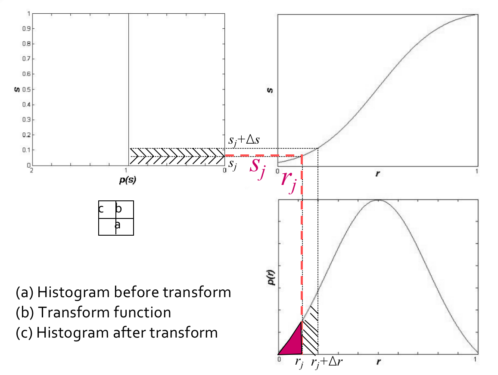

Lab3:对数增强可实现以及直方图均衡
一、实验目的和要求¶
-
通过图像对数运算，探讨如何增强图像的可视性，特别是在低对比度或暗部细节不清晰的情况下。
-
通过直方图均衡化，研究如何改善图像的对比度和亮度分布，使图像更容易分辨和分析。
二、实验内容和原理¶
1.增强图像的可视性¶
为了增强图像的可视信息，对图像中的像素进行基于对数的操作 $$ L_d = \frac{log{({L_{w}+1})}}{log{({L_{max}+1})}} $$ 其中，\(Ld \(是显示亮度，\)Lw \(是真实世界亮度，\)Lmax\)是场景中的最亮值。
- 这个映射能够确保不管场景的动态范围是怎么样的，其最大值都能映射到 1(白)，其他的值能够比较平滑地变化。
2.直方图均衡化¶
(1)直方图¶
a.灰度直方图¶
- 灰度直方图是一种统计图，它表示给定图像中不同灰度级的像素数占总像素数的比例。
- 计算公式如下：
b.彩色直方图¶
- 彩色直方图表示给定图像中不同 R、G、B等级的像素数占总像素数的比例,计算方法与灰度直方图类似

（2）直方图均衡化¶
直方图均衡化（Histogram Equalization）是一种用于增强数字图像对比度的图像处理技术。它通过重新分布图像的像素值，使直方图变得更均匀，从而改善图像的视觉质量。直方图均衡化常被用于提高图像的可视性、分析性能和自动图像处理应用中。例如，过曝光图像的灰度级集中在高亮度范围内，而曝光不足将使图像灰度级集中在低亮度范围内。采用直方图均衡化，可以把原始图像的直方图变换为均匀分布(均衡)的形式，这样就增加了像素之间灰度值差别的动态范围，从而达到增强图像整体对比度的效果。
换言之，直方图均衡化的基本原理是:对在图像中像素个数多的灰度值(即对画面起主要作用的灰度值)进行展宽，而对像素个数少的灰度 值(即对画面不起主要作用的灰度值)进行归并，从而增大对比度，使图像清晰，达到增强的目的。
尽管直方图均衡化具有显著的优点，但它也有一些限制。它可能导致图像出现噪点或过度增强细节，特别是在噪音存在的情况下。此外，均衡化可能改变图像的整体亮度，这可能不适用于所有图像。
- 连续情况的转换\(T\):

-
设 r 为转换前的灰度级， s 为变换前后的灰度级
-
\(0 ≤ r,s ≤ 1\) [对应\((0,255)\)]
-
P® 和 P(s) 是对应于 r 和 s 的概率。转换规则为:
-
T®是单调递增函数，\(0≤r≤1\)且\(0≤T(r)≤1\)
-
逆变换 r = \(T^{-1}(s)\)也是一个单调递增函数 考虑到灰度变换不会改变位置和像素数，我们有 $$ \int_0^rP®dr = \int_0^sP(s)ds=\int_0^s 1*ds = s = T®\ Thus: T®=\int_0^rP®dr $$ 
-
-
离散情况的转换 \(T\):
设一幅图像的像素总数为n，分L个灰度级，\(n_k\)为第k个灰度级出现的像素数，则第\(k\)个灰度级出现的概率为： $$ P(r_k)= \frac{n_k}{n}(0≤n_k ≤1,k=0,1,2,...,MN−1) $$
- 离散灰度直方图均衡化的转换公式为 $$ s_k = T(r_k)=\sum_{i=0}^kP(ri)=\frac{1}{n}\sum_{i=0}^{k}ni $$
三、心得体会¶
在本次实验中，我们学习了图像处理中的两个重要概念：灰度直方图和直方图均衡化。首先，我们进行了图像的灰度直方图分析，这有助于我们了解图像的亮度分布情况，进而为图像增强提供基础。接着，我们学习了直方图均衡化的原理和方法，它是一种用于增强图像对比度的技术。
在实验过程中，我们首先编写了代码来计算图像的灰度直方图，了解了不同灰度级别在图像中的分布情况。这为直方图均衡化提供了必要的信息，帮助我们确定如何调整图像的像素值以获得更好的可视效果。接着，我们实施了直方图均衡化，通过累积分布函数的计算和像素值的映射，将图像的亮度分布均匀化。这使得图像的对比度增加，细节更加清晰，从而提高了图像的可视性。
总的来说，本次实验使我们深入了解了图像处理中的一些关键概念和技术。通过实际编写和运行图像处理代码，我们不仅理论上理解了这些概念，还获得了实际操作的经验。这些技能对于处理和增强图像在许多领域，如计算机视觉、医学影像和数字媒体等方面都非常重要。通过这次实验，我更深刻地理解了图像处理的重要性和应用价值。
创建日期: 2023年11月5日 11:09:32